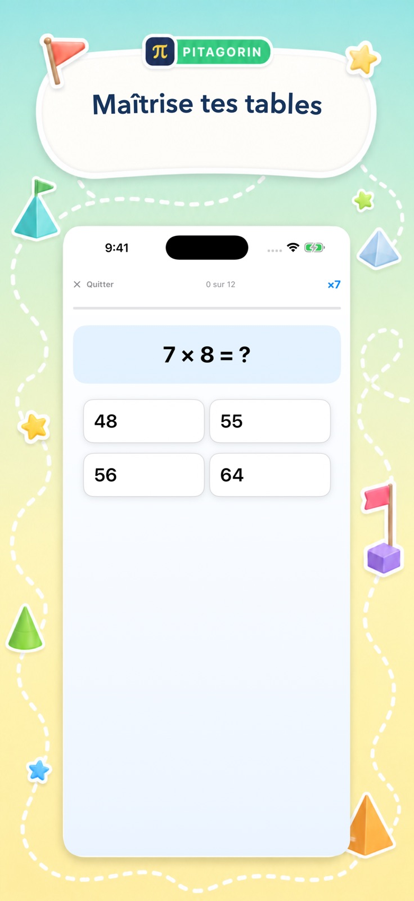

L’expérience réelle
Assez claire pour apprendre. Assez vive pour revenir.
Voici de vraies interfaces Pitagorin. Chacune associe une tâche précise à des repères visuels accueillants et une prochaine action claire.
Quatre moments d’apprentissage
Du rappel rapide au raisonnement guidé.
L’interface s’adapte au but : dynamique pour un défi, calme pour apprendre et explicite pour l’algèbre.




Conçue pour se concentrer
La décoration a aussi un rôle.
La couleur accueille l’élève, tandis que la zone de travail reste spacieuse et lisible.
De grandes expressions et un espacement généreux rendent la tâche facile à repérer.
Chaque écran limite les actions concurrentes pour rendre la suite évidente.
L’aide apparaît quand elle est utile sans interrompre chaque tentative.
Scores, temps, maîtrise et historique donnent une direction concrète.
Passe à l’étape suivante
Essaie l’expérience réelle.
Télécharge Pitagorin gratuitement sur iPhone ou iPad, ou découvre d’abord tous les modes.